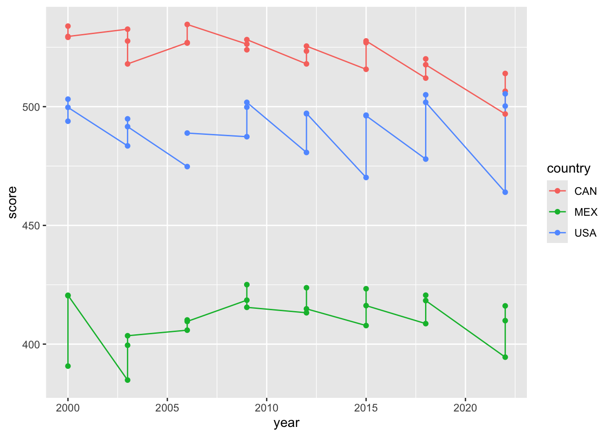
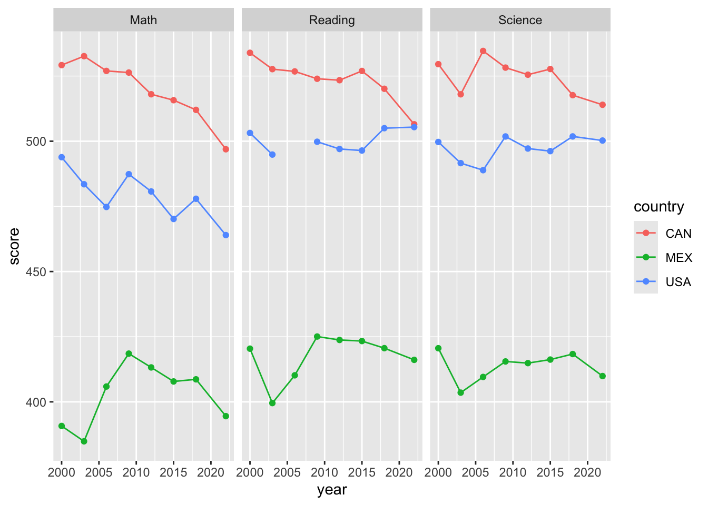
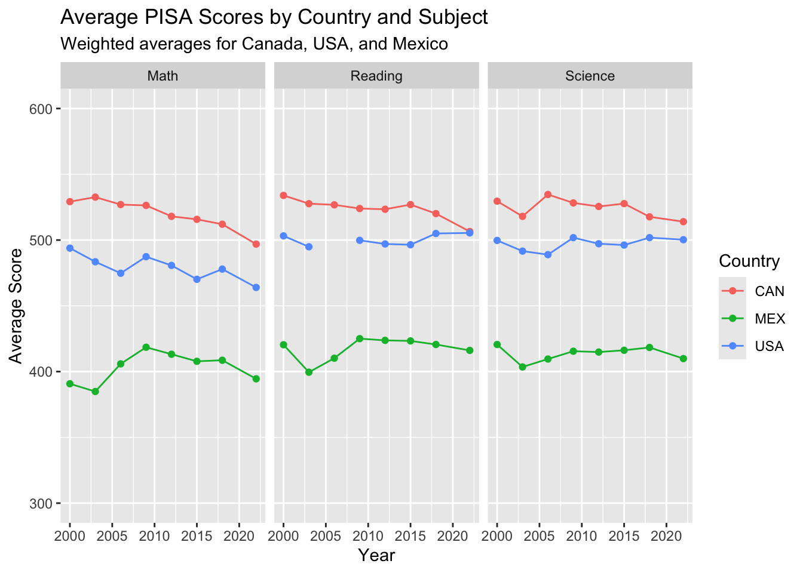
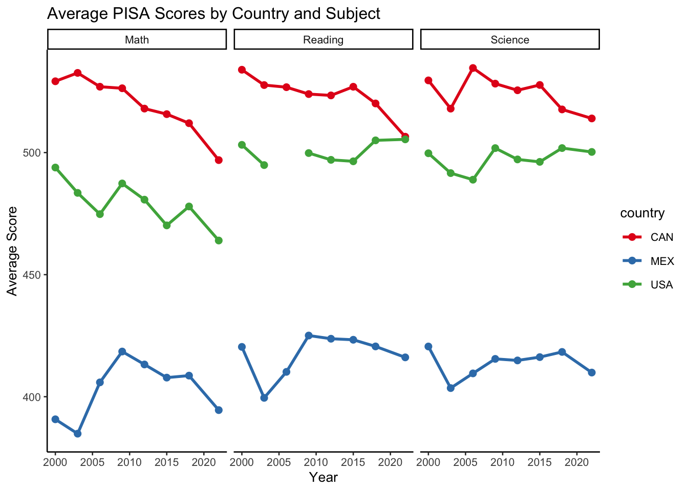
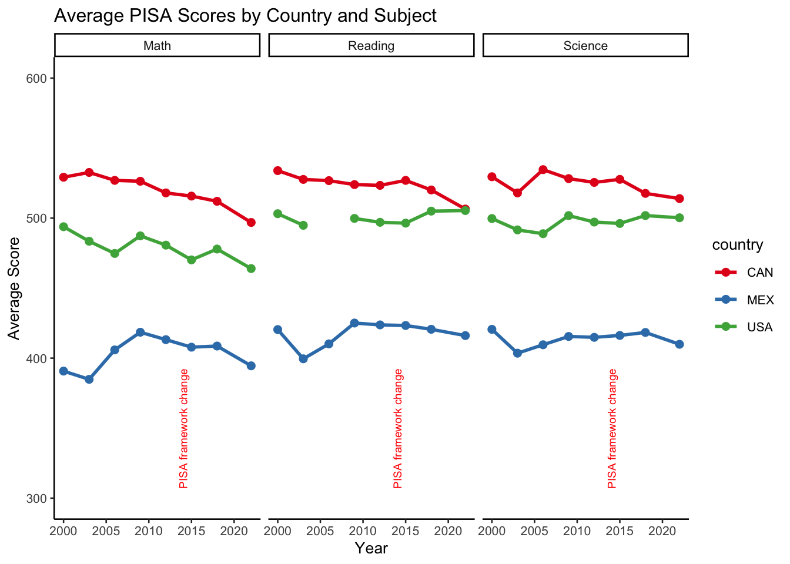

I am grateful to Rony Rodriguez-Ramierz for the creation of this.
Introduction
In this lab session, you’ll work with a dataset containing information about PISA data. The data comes from the learningtower package. Throughout the lab, you will use the following R functions to achieve the final visualization: filter(), group_by(), summarise(), pivot_longer(), mutate(), ggplot(), aes(), geom_line(), geom_point(), facet_wrap(), scale_y_continuous(), labs(), and theme_minimal().
Description of the Dataset
The dataset contains the following variables:
year: Year of the PISA data. Factor.
country: Country 3-character code. Note that some regions/territories are coded as country for ease of input. Factor.
school_id: The school identification number, unique for each country and year combination. Factor.
student_id: The student identification number, unique for each school, country, and year combination. Factor.
mother_educ: Highest level of mother’s education. Ranges from “less than ISCED1” to “ISCED 3A”. Factor. Note that in 2000, all entries are missing.
father_educ: Highest level of father’s education. Ranges from “less than ISCED1” to “ISCED 3A”. Factor. Note that in 2000, all entries are missing.
gender: Gender of the student. Only “male” and “female” are recorded. Factor. Note that we call this variable gender and not sex as this term was used in the OECD PISA database.
computer: Possession of a computer. Only “yes” and “no” are recorded. Factor.
internet: Access to the internet. Only “yes” and “no” are recorded. Factor.
math: Simulated score in mathematics. Numeric.
read: Simulated score in reading. Numeric.
science: Simulated score in science. Numeric.
stu_wgt: The final survey weight score for the student. Numeric.
desk: Possession of a desk to study at. Only “yes” and “no” are recorded. Factor.
room: Possession of a room of your own. Only “yes” and “no” are recorded. Factor.
dishwasher: Possession of a dishwasher. Only “yes” and “no” are recorded. Factor. Note that in 2015 and 2018, all entries are missing.
television: Number of televisions. “0”, “1”, “2” are coded for no, one, and two TVs in the house. “3+” codes for three or more TVs. Factor. Note that in 2003, all entries are missing.
computer_n: Number of computers. “0”, “1”, “2” are coded for no, one, and two computers in the house. “3+” codes for three or more computers. Factor. Note that in 2003, all entries are missing.
car: Number of cars. “0”, “1”, “2” are coded for no, one, and two cars in the house. “3+” codes for three or more cars. Factor. Note that in 2003, all entries are missing.
book: Number of books. Factor. Note that encoding is different in the years 2000 and 2003 compared to all other years. Evaluate table(student$book, student$year) for a demo.
wealth: Family wealth. Numeric. Note that in 2003, all entries are missing.
escs: Index of economic, social, and cultural status. Numeric.
Exercises
Exercise 0: Load your package and data
Let’s start by loading the tidyverse package and the data:
library(tidyverse)
── Attaching core tidyverse packages ──────────────────────── tidyverse 2.0.0 ──
✔ dplyr 1.1.4 ✔ readr 2.1.5
✔ forcats 1.0.0 ✔ stringr 1.5.1
✔ ggplot2 3.5.0 ✔ tibble 3.2.1
✔ lubridate 1.9.3 ✔ tidyr 1.3.1
✔ purrr 1.0.2
── Conflicts ────────────────────────────────────────── tidyverse_conflicts() ──
✖ dplyr::filter() masks stats::filter()
✖ dplyr::lag() masks stats::lag()
ℹ Use the conflicted package (<http://conflicted.r-lib.org/>) to force all conflicts to become errors
library(learningtower)
Warning: package 'learningtower' was built under R version 4.3.3
The learningtower package (version 1.1.0) provides data from OECD PISA database between 2000 - 2022. For package size reasons, only a small subset is provided in the package. Use the function `load_student()` to access the full data.
# load the datastudent_data_all <-load_student("all")
Downloading year 2000...
Downloading year 2003...
Downloading year 2006...
Downloading year 2009...
Downloading year 2012...
Downloading year 2015...
Downloading year 2018...
Downloading year 2022...
Exercise 1: Filtering the Data
Start by filtering the dataset to focus on three specific countries: Canada (CAN), the United States (USA), and Mexico (MEX). You can select any country you have. The data uses country 3 character codes. If you don’t know your country’s iso code, you can find it here.
# filter to the specific countriesstudent_data_countries <- student_data_all |>filter(country %in%c("CAN", "USA", "MEX"))head(student_data_countries)
# A tibble: 6 × 22
year country school_id student_id mother_educ father_educ gender computer
<int> <fct> <chr> <int> <fct> <fct> <fct> <fct>
1 2000 CAN 1 220 <NA> <NA> female <NA>
2 2000 CAN 1 660 <NA> <NA> male <NA>
3 2000 CAN 2 140 <NA> <NA> male <NA>
4 2000 CAN 2 360 <NA> <NA> male <NA>
5 2000 CAN 2 580 <NA> <NA> male <NA>
6 2000 CAN 2 690 <NA> <NA> male <NA>
# ℹ 14 more variables: internet <fct>, math <dbl>, read <dbl>, science <dbl>,
# stu_wgt <dbl>, desk <fct>, room <fct>, dishwasher <fct>, television <fct>,
# computer_n <fct>, car <fct>, book <fct>, wealth <dbl>, escs <dbl>
Exercise 2: Summarizing the Data
Now that you have filtered the dataset, let’s summarize the PISA scores in mathematics, reading, and science for each country by year. Use the weighted.mean() function to calculate the weighted average.
Why Use Weighting?
In survey data like PISA, not all students represent the same number of individuals in the population. The stu_wgt variable represents the survey weight, which adjusts for the survey design, non-response, and post-stratification. Applying weights is crucial because it ensures that the results are representative of the broader population. Without weighting, the mean scores could be biased, particularly if certain groups of students (e.g., from specific regions or demographic backgrounds) are over- or under-represented in the sample.
# compute weighted average by year and country:avg_PISA_scores <- student_data_countries |>group_by(year, country) |># calculate weighted averages by subject:summarise(math =weighted.mean(math, w=stu_wgt, na.rm = T),reading =weighted.mean(read, w=stu_wgt, na.rm = T),science =weighted.mean(science, w=stu_wgt, na.rm = T))
`summarise()` has grouped output by 'year'. You can override using the
`.groups` argument.
head(avg_PISA_scores)
# A tibble: 6 × 5
# Groups: year [2]
year country math reading science
<int> <fct> <dbl> <dbl> <dbl>
1 2000 CAN 529. 534. 530.
2 2000 MEX 391. 420. 421.
3 2000 USA 494. 503. 500.
4 2003 CAN 533. 528. 518.
5 2003 MEX 385. 400. 404.
6 2003 USA 483. 495. 492.
Exercise 3: Reshaping the Data (Tidying)
How Should Our Data Look Like?
To create an effective visualization, our data needs to be in a tidy format. Specifically, each row should represent a single observation, and each variable should be in its own column. In this case, instead of having separate columns for each test score (math, read, science), we should have a single column for the test scores and another column that identifies the type of test (e.g., math, read, science). This structure allows us to easily plot the scores across different tests and countries.
Use pivot_longer()
To achieve this tidy format, we will use the pivot_longer() function to reshape the data. This function takes multiple columns and condenses them into key-value pairs, which results in a longer, more flexible dataset. Assign the new format to the object pisa_long
# covert the dataset to long formpisa_long <- avg_PISA_scores |>pivot_longer(cols =c(math, reading, science),names_to ="test",values_to ="score")# preview data:head(pisa_long)
# A tibble: 6 × 4
# Groups: year [1]
year country test score
<int> <fct> <chr> <dbl>
1 2000 CAN math 529.
2 2000 CAN reading 534.
3 2000 CAN science 530.
4 2000 MEX math 391.
5 2000 MEX reading 420.
6 2000 MEX science 421.
After running this code, your data will have four key columns: year, country, and test, with the scores in a single column named score. This format is ideal for visualization in ggplot2.
Question: How do you think the data should be formatted for effective visualization? Why is the long format preferred in this context?
Exercise 4: Data Transformation
Use the mutate() function to capitalize the test names. This will make the final plot more readable. Re-assign the updated test variable to the same object pisa_long. Hint Look at the str_to_title() function.
# capitalize test names:pisa_long$test <-str_to_title(pisa_long$test)# previewhead(pisa_long)
# A tibble: 6 × 4
# Groups: year [1]
year country test score
<int> <fct> <chr> <dbl>
1 2000 CAN Math 529.
2 2000 CAN Reading 534.
3 2000 CAN Science 530.
4 2000 MEX Math 391.
5 2000 MEX Reading 420.
6 2000 MEX Science 421.
Exercise 5: Creating a Line Plot with Points
In this exercise, you will create a line plot of the PISA scores over time for each country. Line plots are useful for visualizing trends over time, while adding points helps to emphasize the data at specific time intervals. Create a ggplot object and call it pisa_plot.
Task: Use geom_line() to connect the data points and geom_point() to highlight each data point on the plot.
# Create the plot, with different conutries coded by color:ggplot(data = pisa_long, aes(x=year, y = score, color = country)) +geom_line() +geom_point()
Warning: Removed 1 row containing missing values or values outside the scale range
(`geom_point()`).

Question: What is the main issue with this plot?
Exercise 6: Adding Facets to the Plot
Faceting allows you to create multiple plots based on the levels of a factor variable. In this case, we will use facets to separate the plots by the type of test (math, read, science). This makes it easier to compare the trends in different test scores.
Task: Add facet_wrap(~ test) to the plot to create a separate panel for each test.
# Add a facet wrap to create a separate panel for each test:ggplot(data = pisa_long, aes(x=year, y = score, color = country)) +geom_line() +geom_point() +facet_wrap(~ test)
Warning: Removed 1 row containing missing values or values outside the scale range
(`geom_point()`).

Exercise 7: Customizing Labels and Scales
Labels and scales are essential for making your plot informative and easy to read. In this exercise, you will add labels to the axes and title, and adjust the scale of the y-axis to ensure the plot is correctly displayed.
Task: Use the labs() function to add labels and titles, and scale_y_continuous() to set the limits of the y-axis (Hint: Look for the limits argument).
ggplot(data = pisa_long, aes(x = year, y = score, color = country)) +geom_line() +geom_point() +facet_wrap(~ test) +labs(title ="Average PISA Scores by Country and Subject",subtitle ="Weighted averages for Canada, USA, and Mexico",x ="Year",y ="Average Score",color ="Country" ) +scale_y_continuous(limits =c(300, 600))
Warning: Removed 1 row containing missing values or values outside the scale range
(`geom_point()`).

Extra exercises
Exercise 8: Customizing the Plot
Experiment with different themes and color palettes to make the plot more visually appealing.
ggplot(data = pisa_long, aes(x = year, y = score, color = country)) +geom_line(size =1) +geom_point(size =2) +facet_wrap(~ test) +labs(title ="Average PISA Scores by Country and Subject",x ="Year", y ="Average Score" ) +theme_classic(base_size =10) +scale_color_brewer(palette ="Set1")
Warning: Using `size` aesthetic for lines was deprecated in ggplot2 3.4.0.
ℹ Please use `linewidth` instead.
Warning: Removed 1 row containing missing values or values outside the scale range
(`geom_point()`).

Exercise 9: Adding Context to the Visualization
Add annotations or text to the plot to highlight significant events or changes in the data.
ggplot(data = pisa_long, aes(x = year, y = score, color = country)) +geom_line(size =1) +geom_point(size =2) +facet_wrap(~ test) +labs(title ="Average PISA Scores by Country and Subject",x ="Year", y ="Average Score" ) +theme_classic(base_size =10) +scale_color_brewer(palette ="Set1") +annotate("rect", xmin =2015, xmax =2015, ymin =300, ymax =600,alpha =0.1, fill ="blue") +annotate("text", x =2015, y =350, label ="PISA framework change", angle =90, vjust =-0.5, color ="red", size =2.5)
Warning: Removed 1 row containing missing values or values outside the scale range
(`geom_point()`).

Conclusion
By completing these exercises, you have learned how to filter, summarize, and visualize data in R. You have also gained insights into how different formatting and visualization techniques can impact the interpretation of your data. As you continue to work with data, remember the importance of context and clear communication in your visualizations.